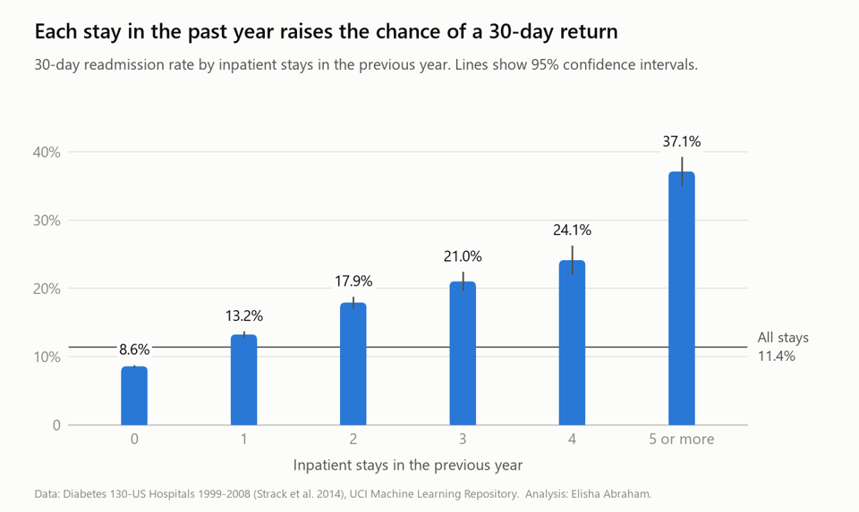

Hospital readmissions among patients with diabetes
Which patients come back within 30 days, and where should follow-up effort go first?
101,766 hospital stays, from raw file to audited data model to a risk score tested on patients it was not built on. 4.5% of patients account for half of all 30-day readmissions, and a five-item score sorts discharges into tiers from 6% to 27%.